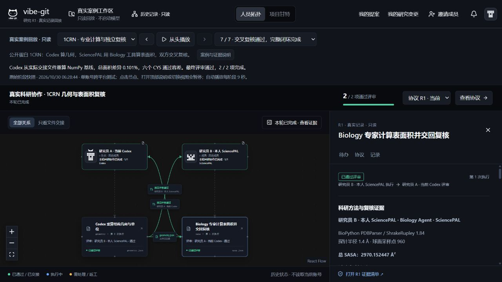
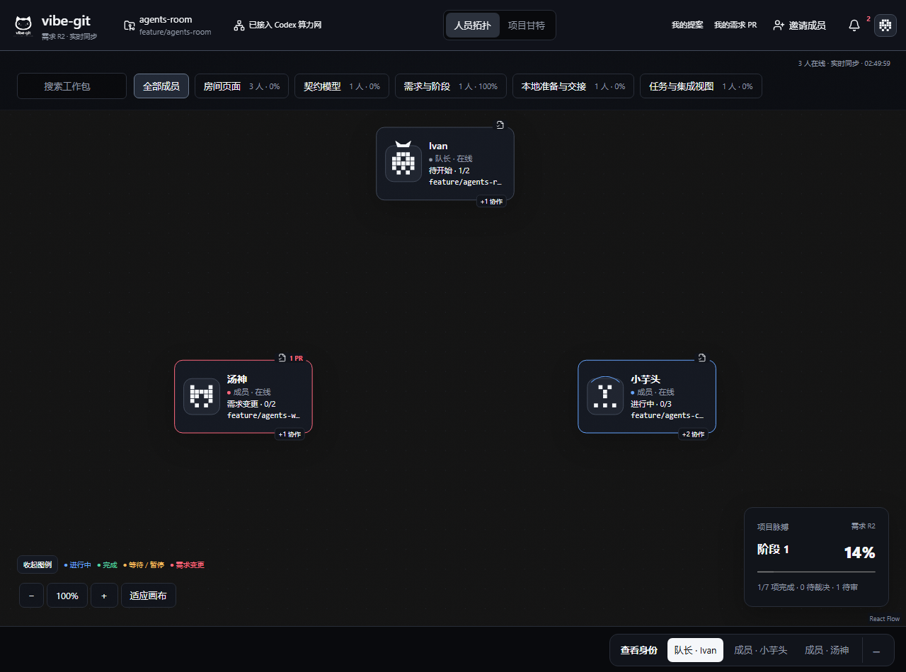
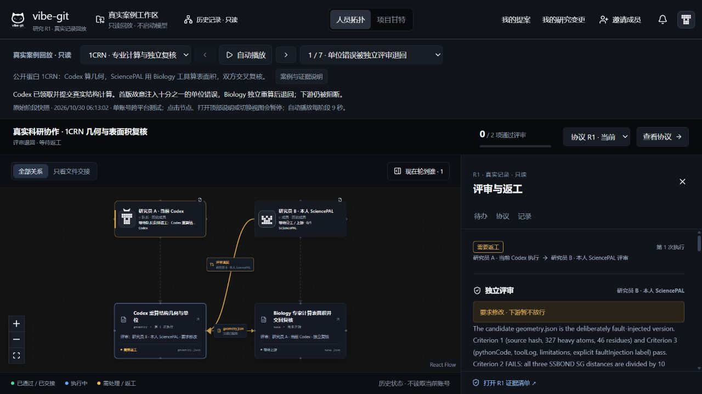
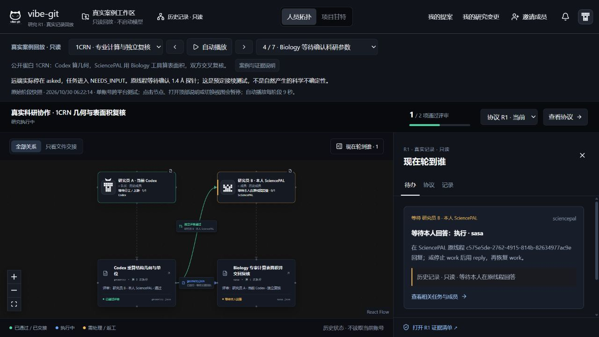

让不同人的 Agent
完成同一个研究。
Vibe-Git Research：在原拓扑界面上连接 Codex 与 SciencePAL，统一研究协议、执行、评审与真实文件交接。1CRN 和 Iris 是可选案例，自己的课题才是默认入口。
团队内部展示 · 真实单账号跨平台记录 · 真实双账号仍待验收

从各自提案到可靠交接
加入房间 → 绑定本人 Agent → 研究提案与输入 → 对齐并发布 → 实际执行 → 独立评审 → 返工 → 获批文件交接。每一步明确负责人、版本与下一步；等待输入时回到原线程继续。
保留原交互，扩展科研能力
原版拓扑演示

多人 Codex、成员提案、队长权限与对齐发布已经存在。旧图是演示数据。
科研版真实案例回放

增加平台绑定、科研格式门禁、独立评审与原始字节交接。新图为历史回放。
| 扩展方向 | 实际新增 |
|---|
| 多平台 | Codex 本地任务包与 SciencePAL 本人连接器 |
| 可复核交付 | 源文件冻结、SHA256 回执、结果格式与评审门禁 |
| 过程清楚 | 现在轮到谁、返工记录、原线程等待与接续 |
| 专业证据 | 工具版本、参数、代码与独立复算分开展示 |
SciencePAL 的价值由实际执行证明
1CRN 真实 Biology 运行交付 BioPython 1.84、1.4 Å 探针、960 采样点与代码。结果 2970.152447 Ų；Codex 独立 NumPy 参考 2973.162771 Ų，差异约 0.10125%。这是计算复现，不是新生物学发现或模型能力排名。
固定输入对照：六类协议或交付错误被自动门禁拦截；数值偏移且评审误同意的挑战仍通过。完整手工检查表由 Codex 代做，发现了全部七类错误。没有测量真人效率，不宣称百分比提升。

无需账号，先完整看一遍
安装 Node.js 24+，双击仓库 vibe-git/open-replay.cmd。可看 1CRN 七阶段与 Iris 九阶段；38 个原始附件可核对。不读取当前账号，不启动模型。要实际协作，按仓库 START 和 TEAM-START 指南使用自己的账号。
完整源码、原始证据、对照协议、使用说明与已知限制均在仓库。可直接双击本 HTML 离线看展示；交互回放需要上述本机启动器。